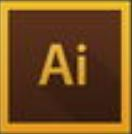
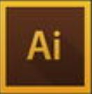
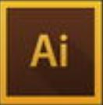

接触过的软件
 
接触过的编程语言：
Python HTML C
Research / Research Proposal
关于APP中用户评论的设计研究
交互信息元素对大学生使用图书馆网站的可用性影响研究
基于数据挖掘和情绪分析法的国内性骚扰事件预测分析
吃货一枚，编程小白。最不擅长处理逻辑问题，经常因为毛手毛脚被指责不够精细。
动手废，上色废，实践能力几乎为0。
学艺术专业却又是最不像艺术生的艺术生。
怎么说呢，“不是肥宅的艺术生不是好吃货，不爱理科的垃圾学生不是好艺术生。”
Python HTML C
关于APP中用户评论的设计研究
交互信息元素对大学生使用图书馆网站的可用性影响研究
基于数据挖掘和情绪分析法的国内性骚扰事件预测分析